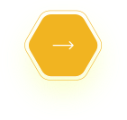

Voter Api design
CivicVotes is a production-ready Election & Voting Management System built with ASP.NET Core Web API. It provides comprehensive features for managing elections, candidates, and secure voting with role-based access control.
